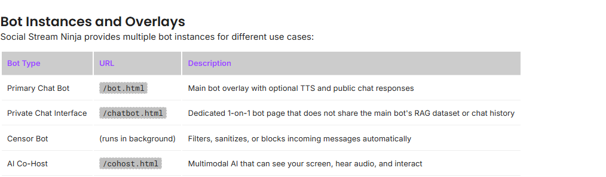
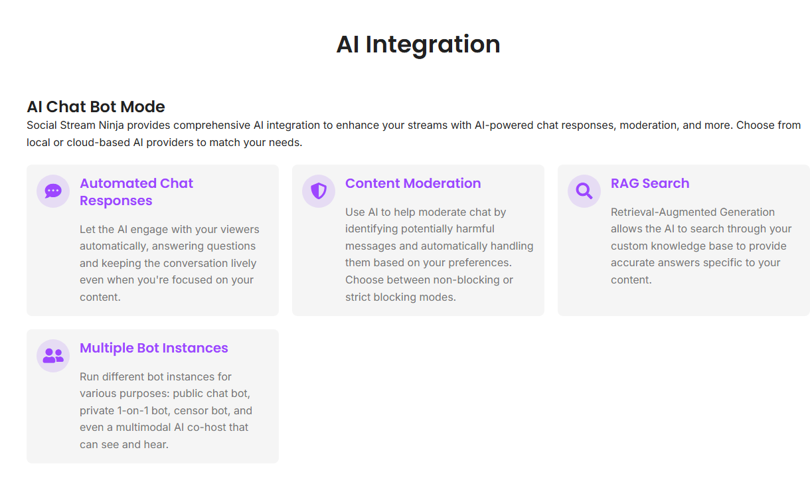

Pick The Right Bot Page
Social Stream Ninja has more than one AI bot surface. Choose the smallest one that fits the job.

| Need | Use | Notes |
|---|---|---|
| On-stream replies | bot.html | Use for the primary public bot and optional TTS. |
| Private testing | chatbot.html | Use for one-on-one testing without sharing the main bot state. |
| Moderation | Censor/moderation settings | Start in non-blocking mode before letting it block messages. |
| Visible assistant | cohost.html | Use the cohost pages when the AI should be seen or heard on stream. |
1. Configure The AI Provider
Choose a provider in the popup before opening the bot page. For local models, use Ollama Native API or Custom API. For cloud models, add the provider API key and model name required by that service.

- Use Ollama Native API if Ollama is already running on your computer.
- Use Custom API for OpenAI-compatible local servers.
- Use hosted providers when you want easier setup and accept provider account/API costs.
2. Test Privately First
- Open
chatbot.html?session=YOUR_SESSIONin a normal browser. - Send a short test message.
- Confirm the provider responds.
- Adjust the prompt, model, and response length before public use.
- Only then try
bot.htmlor a public reply path.
Do not start with automatic public replies. First make sure the bot answers safely and briefly.
3. Public Replies Need Platform Support
A bot can only send messages back when the platform, account, login state, and mode support sending. Reading chat and replying to chat are different features.
- Confirm the account is signed in where Social Stream is capturing chat.
- Confirm the source mode supports send-back for that platform.
- For Twitch, consider a separate bot account so replies do not come from your main streamer account.
- Use rate limits and approval workflows when testing live.
Related: Twitch bot account guide.
Common Fixes
- No reply: check provider key, model name, endpoint, and browser console errors.
- Wrong chat room: make sure bot page, dock, and source use the same
session. - Bot talks too much: lower response length, add a cooldown, or require approval.
- Bot cannot send to platform: check platform send-back support, account role, login, and rate limits.